AI 软件股的投资逻辑
从“卖 token”的本质，到 2026 下半年是否非对称机会
一次完整的思考整理 · 2026 年 6 月
本文为基于公开数据的分析框架，非投资建议。
导读
这份文档把一连串关于 AI 软件股的思考，从零散的对话整理成一条完整的逻辑链。它要回答的核心问题只有一个：当 AI 把软件的成本结构改写之后，那些“被低估”的 SaaS 软件股，究竟是一次在安全边界下具备高赔率的抄底机会，还是只会阶段性反弹、终究算不上好生意的趋势？
我们的推进路径是这样的：先拆掉旧的估值前提，搞清楚 AI 到底改变了什么（Part 1）；再逐条检验“卖 token 就不值得投”这个判断站不站得住（Part 2、Part 3）；然后讨论 AI 应用会不会迎来一波主升浪、它的拐点长什么样（Part 4、Part 5）；接着回到 2026 下半年真实的盘面，看好公司能不能走出独立行情（Part 6）；最后用实时数据把整套逻辑验一遍，给出综合判断（Part 7、Part 8）。
讲解尽量用“费曼小白”的方式：先用大白话和比喻把“是什么、为什么”讲清楚，再上数据和术语；适合对比的地方用表格呈现。文中每一张图都画在它所解释的那段文字旁边，引用过的关键数据都在文末标注了来源。
目录
Part 1 AI 时代软件股的底层逻辑重估
1.1 软件为什么曾经是最好的生意
先讲个最朴素的道理。软件之所以长期被当成历史上最好的生意之一，本质是两件事：零边际成本，加上高转换成本。一份代码写完，多卖给一个用户几乎不花钱——这就是“零边际成本”；而企业一旦用上某套系统，数据、流程、习惯都绑在上面，想换掉很痛——这就是“高转换成本”。
这两点合起来，让软件能做到 80% 以上的毛利率，所以它配得上高估值。记住这个前提，因为 AI 接下来要动的，正是它。
1.2 AI 打破了一半前提：每个 token 都有成本
AI 把“零边际成本”这个前提打破了一半。和互联网不一样——互联网用户规模到了一定程度，多服务一个人的边际成本趋近于零；但 AI 不是，每一次推理、每一个 token 都有真实的成本要付。
这是 AI 独特商业模式的根。它意味着 AI 应用的成本结构，天生就比传统软件“重”。下面这张图把两者的毛利结构摆在一起看。
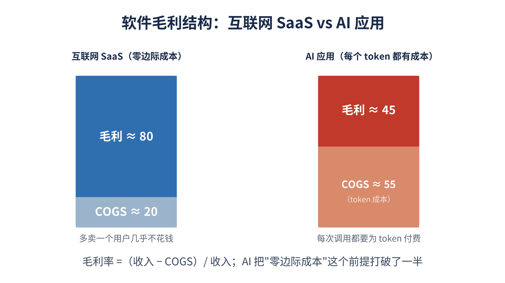
图 1 互联网 SaaS 与 AI 应用的毛利结构对比：AI 把“零边际成本”打破了一半
1.3 COGS 是什么（小白版）
COGS 全称 Cost of Goods Sold，中文叫“营业成本”或“销货成本”，指企业为了产生收入直接消耗掉的成本。对一家 AI 应用公司来说，COGS 里最关键的一块，就是调用大模型的 token 费用（外加云计算、托管这些）。
它和毛利的关系是一个简单的公式：毛利率 =（收入 − COGS）/ 收入。所以后面所有讨论的核心，其实就盯着一件事：token 这块 COGS，会怎么影响 AI 应用的毛利。
1.4 两种商业模式：按席位 vs 按用量
AI 来了之后，SaaS 软件的收费方式出现了分叉，这决定了它的命运分两条路：
按人头收费（By Seat）：传统模式，按用户席位数收钱。问题是 AI 能让一个人干几个人的活，席位需求可能被 AI 直接吞噬，于是这类软件股下跌——这条路基本不用看。
按用量收费（By Usage）：把收费和实际用量挂钩。AI 用得越多，收入越高，于是 AI 相关经营收入在增加。ServiceNow 等公司的阶段性反弹，很大程度来自这个转型。
所以市场曾经的那波反弹，逻辑是：“在低点 + 有弹性”。但弹性不等于持续性，这正是需要追问的地方。
1.5 “卖 token / 中介渠道”的批判
这里是整个思考最锋利的起点。哪怕一家 SaaS 成功转成了按用量收费，往深里看，它本质上还是在“转卖 token”。
打个比方：我本来可以花 50 美金直接调用大模型的 API；但如果我把这 50 美金付给一个帮我做 PPT 的 SaaS 软件，这个软件本质上也是去调用了大模型。它是个中介——我的钱经由它流到了模型厂商，而它自己还得去采买 token。它的收费会比直接用 API 贵一点、有一定溢价，但底层就是模型生意的渠道方。
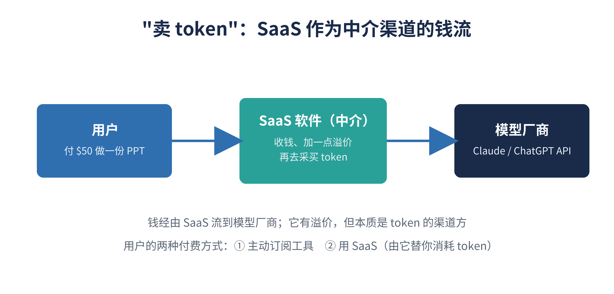
图 2 “卖 token”：用户的钱经由 SaaS 中介流向模型厂商
而模型层本身——不管是 Claude 还是 ChatGPT——竞争都极其激烈，大模型自己的商业逻辑都还没特别清晰。于是这个批判的结论很冲：既然底层是个还没被证明的模型生意，那作为它渠道方的 SaaS，哪怕转型成功，本质上也不值得投。Part 2 要做的，就是逐条检验这个结论站不站得住。
Part 2 为什么“卖 token”不等于“不值得投”
上面那个批判的内核是对的——成本结构确实变了。但它的结论走得太远了。有三个地方，这条逻辑链“滑过去了”。
2.1 反驳一：token 成本在通缩，不是永久的拖累
批判默认 token 成本是一个永久压在毛利上的石头。但现实恰恰相反——同等能力的推理价格，是按数量级在往下掉的。
如果一个 SaaS 按“客户价值/产出”定价，而它的 COGS（token）每年大幅下降，那它的毛利是随时间扩张的，不是被吞噬的。换句话说：模型层越是惨烈竞争、越是商品化，对应用层反而越有利，因为你的核心原料变得又便宜又可互换。这其实是“卖铲子”逻辑的反面——谁握着客户和数据，谁就受益于上游打价格战。批判只算了一边账。
2.2 反驳二：套壳和系统级 SaaS 是两种生物
“卖 token”这个批判，用在纯套壳应用上完全成立——它唯一的功能就是帮你调一次大模型，没有自己的护城河。但它套到系统级 SaaS 上就断了。
像 ServiceNow、Salesforce 这种之所以可能值钱，从来不是因为软件免费，而是因为它握着企业的专有数据、工作流（workflow）和 system of record。AI 在这里是个让黏性和 ARPU 上升的功能，不是它的全部。它的毛利来自数据 + 工作流 + 转换成本，而不是 token 差价。
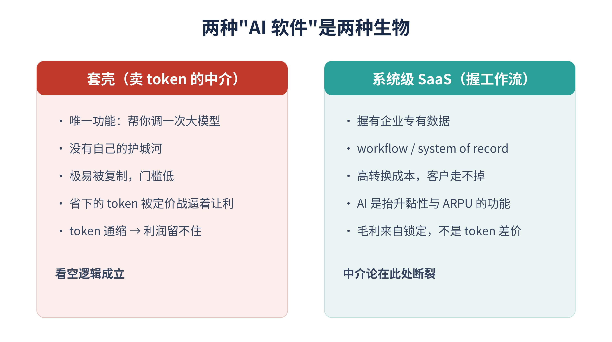
图 3 两种“AI 软件”是两种生物：套壳 vs 系统级 SaaS
2.3 反驳三：“只有半导体赚钱”是周期位置，不是终局
“整个 AI 产业看下来，现在只有存储和半导体在赚钱，应用一直在跌”——这个观察是对的，但它说的是时序，不是终值。
这是基建早期的典型分布。铁路时代，先赚钱的是钢轨和钢铁厂，建在铁路上的生意要晚一个身位才起来。把当下资本开支阶段的利润分布，读成“应用层永远不能盈利”，是这段推理里最大的一个跳跃。
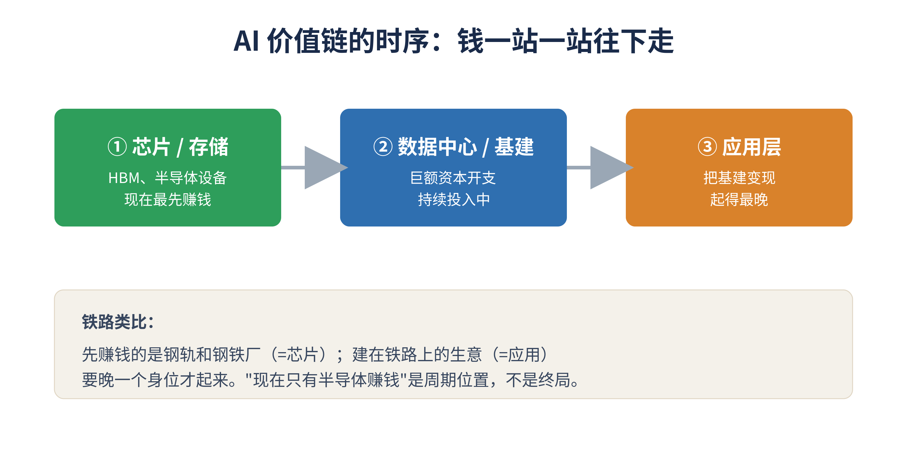
图 4 AI 价值链的时序：芯片→基建→应用，钱一站一站往下走
2.4 真正的判别标准
所以真正该问的，不是“它是否在转卖 token”，而是两个问题：它是否拥有让自己把毛利 keep 在投入成本之上的东西（专有数据、工作流锁定、分发渠道）？它的定价是随“客户价值”放大，还是随“自己的 COGS”放大？
顺便破一个误解：按用量收费 ≠ 卖 token。Snowflake、Datadog 早在 AI 之前就是 usage-based，照样高毛利，因为它们的用量绑的是客户价值，不是自己的成本。
下表把套壳和系统级 SaaS 的关键差别整理在一起：
| 维度 | 套壳（中介） | 系统级 SaaS |
| 核心资产 | 只有“接入 AI”这件事 | 专有数据 + 工作流 + 客户关系 |
| 护城河 | 几乎没有，极易复制 | 高转换成本，客户走不掉 |
| 毛利来源 | token 差价（被定价战压） | 锁定与价值，不靠 token 差价 |
| token 通缩时 | 省下的被迫让利给客户 | 通缩沉淀为自己的毛利 |
| AI 的角色 | 就是产品本身 | 抬升黏性与 ARPU 的功能 |
| 投资含义 | 看空逻辑成立 | 中介论在此处断裂 |
Part 3 Token 越便宜越好 与 Jevons 效应
3.1 为什么 token 便宜对应用层是双重利好
把反驳一推到底，会得到一个反直觉但重要的结论：token 越便宜越好。原因有两层。
第一层在毛利端：售价不变，COGS（token）下降，毛利空间就打开、并随时间扩张；模型层越商品化，应用层越受益。第二层在需求端：token 变便宜会让很多原来“算账不划算”的用例突然成立，用量和整个市场池（TAM）被撑大。
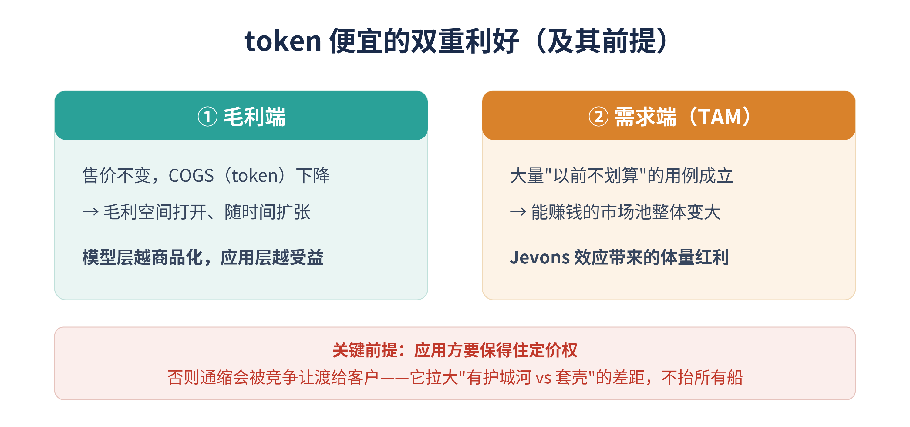
图 6 token 便宜的双重利好：毛利端 + 需求端（TAM）
3.2 限定词：前提是定价权
但“token 越便宜越好”要加一个限定词：前提是应用方保得住定价权。
token 通缩同时干了两件相反的事：一边把你的 COGS 压低、毛利打开；另一边也把“接入 AI”的门槛打到地板，意味着对手甚至模型厂商自己都能轻松复制一个壳。所以它不是把所有船一起抬高，而是拉大差距——奖励有护城河的（数据、工作流、分发），惩罚纯套壳的。对套壳方，省下的成本会在竞争里被迫让渡给客户；对有锁定能力的厂商，这部分通缩才真正沉淀成毛利。
3.3 Jevons 效应（小白版）
第二层利好背后有个经济学名字叫 Jevons 效应，说的是一件反直觉的事：一个东西用起来更便宜、更高效了，总消耗量不降反升。
名字来自 19 世纪的英国经济学家 Jevons。当时蒸汽机改良、烧煤效率大增，大家都以为煤会越用越少；结果恰恰相反——煤变划算了，以前用不起蒸汽机的工厂、铁路、轮船全用上了，机器多了几百倍，总煤耗反而暴涨。生活里的例子是 LED 灯：比白炽灯省电几倍，但因为照明变便宜，大家到处装灯，总用电量并没怎么降。
一句话：东西变便宜，省下的不是用量，而是把以前因为太贵而没人做的事全都解锁了出来。
放回 AI：token 现在还贵，所以“让 AI 读完公司每一封历史邮件、分类、写摘要”这种事，按今天的价格算下来不划算就放弃了；但当 token 便宜 100 倍，这件事变成几十块钱，你立刻就会做——而且全世界无数这种用例会被同时解锁。这就是“TAM 被撑大”的真正含义。
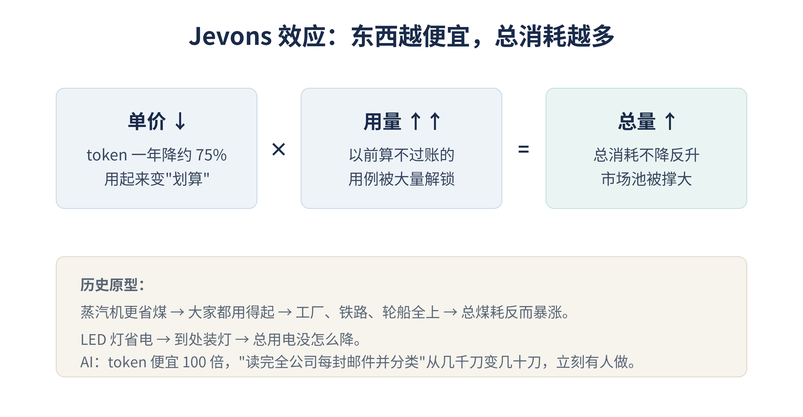
图 5 Jevons 效应：单价↓ × 用量↑↑ = 总消耗↑，市场池被撑大
Part 4 AI 应用会有主升浪吗：催化剂与拐点
4.1 形态：选股型浪潮，不是同质 beta
会有，但形态和半导体不一样。半导体/存储现在是一个资本开支驱动、相当同质的 beta——大家买的是同一批 GPU/HBM，水涨船高。应用层不会这么齐步走，它更像 2002 年之后的互联网：是一个分化极大的“选股型”浪潮，赢家和输家差几十倍，而不是板块一起涨。而且它在时序上更晚，通常要等基建那一棒打到“市场开始追问 ROI”的时候，钱才往能变现基建的应用方轮动。
4.2 四个催化剂 / 拐点
真正值得盯的拐点信号有四个：
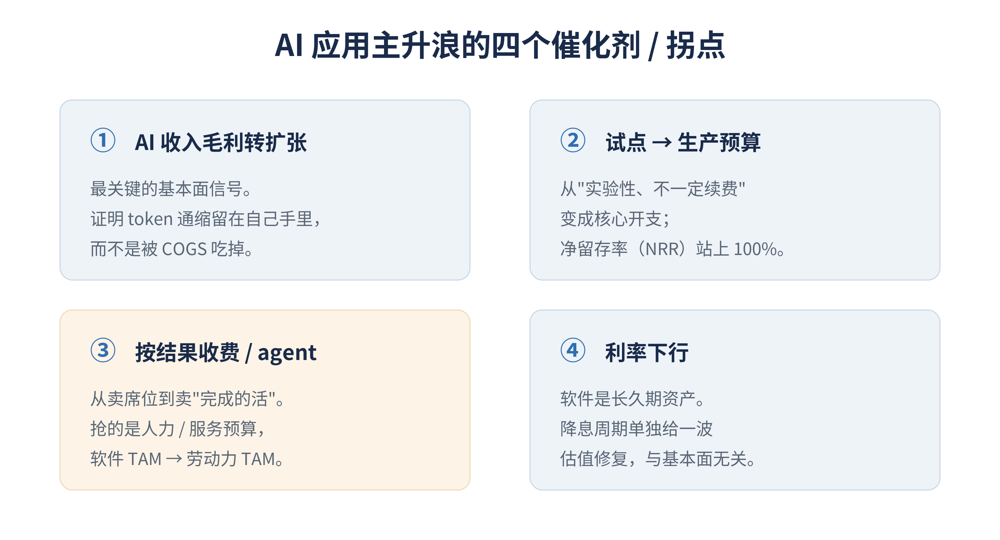
图 7 AI 应用主升浪的四个催化剂 / 拐点
① AI 收入的毛利由拖累转为扩张。这是最关键的基本面信号。现在市场根本不信“AI 收入是赚钱的”；一旦头部公司披露 AI 业务在健康且上升的毛利率，证明 token 通缩留在了自己手里，估值逻辑就会重估。
② 从“试点预算”变成“生产预算”。现在大量 AI 使用是实验性、不一定续费的钱。拐点是 AI 产品的净留存率（NRR）明确站上 100% 以上，变成会续约、会扩量的核心开支。
③ 定价从“卖席位”转向“卖完成的活”（agent / 按结果收费）。这是最大的那个催化剂。一旦应用能按“任务完成度/产出”收费，它抢的就不再是软件预算，而是人力/服务预算——TAM 大一个数量级。软件 TAM → 劳动力 TAM 的重估，才配得上“主升浪”三个字。
④ 宏观利率。软件是长久期资产，降息周期会单独给一波估值修复，跟基本面无关。
4.3 失败模式：被模型厂商前向一体化吃掉
这套主升浪的逻辑有一个真实的失败模式——去中介化。如果 OpenAI、Anthropic、Google 自己往下做应用、打包分发，那不光套壳，连一部分系统级 SaaS 的工作流都可能被绕过。所以“应用层会有主升浪”不是必然，它赌的是“工作流和专有数据的锁定，强到模型厂商进不来”。
Part 5 ROI 之问：分拣机而非发令枪
5.1 两种不一样的“ROI 之问”
市场现在确实在追问 ROI，但要把它掰成两种含义相反的问法：
第一种，对基建资本开支的 ROI 之问：“砸进 GPU/数据中心的几千亿能不能回本”。这一种是应用层行情的铺垫、是利好——因为它的唯一答案就是“取决于应用层有没有真的赚到钱”。
第二种，对 AI 软件本身的 ROI 之问：客户从“鼓励员工狂烧 token”转向“省着用、要算账”。这一种对应用层短期收入是逆风——试点预算开始被砍，大家不再为“看起来很酷”付费，只为“真能省钱/赚钱”付费。
5.2 它是一台分拣机
“市场追问 ROI 的时刻”不是发令枪，而是一台筛选机。它不是行情的起点，而是一段把“真有价值”和“纯试点货”分拣开的过程——往往泥沙俱下：好公司和坏公司会被一起抛售，因为市场一开始分不清谁能扛过拷问。真正的重估要更晚，等幸存者拿出“毛利在扩张、续费率站上 100%”的实证之后才来。
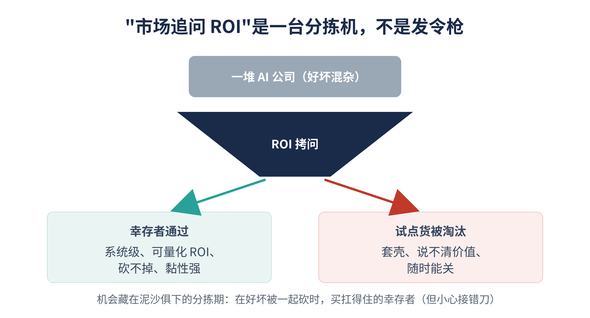
图 8 “市场追问 ROI”是一台分拣机：幸存者通过，试点货被淘汰
5.3 机会与风险
所以“安全边界 + 高赔率”的不对称，恰恰藏在这个难受的分拣期里：在市场把好的坏的一起砍的时候，买那些其实扛得住 ROI 拷问的幸存者。而且这个环境本身就在替你做判别题——它天然奖励“可量化 ROI、砍不掉、黏性强”的系统级软件，天然淘汰“说不清价值、随时能关”的套壳。
风险也讲明白：难点在“看起来像幸存者”和“真的是幸存者”之间——有些名字现在显得很稳，其实是还没被砍到的试点货。接刀子接错了一样亏。这就是选股门槛高的地方。
Part 6 当下盘面：独立行情能走出来吗
6.1 高波动分化市，相关性会飙升
先给一个不太舒服但诚实的结论：短期内，好公司大概率独木难支。有一条铁律——波动一放大，相关性就飙升。风险偏好收缩时，市场不看个股基本面，而看因子流动（利率、流动性、仓位）。这时候一只基本面再好的 AI 软件股也会被砍，不是因为逻辑坏了，而是因为它是个高 beta、长久期、拥挤的流动性资产，大家要降杠杆、套现时先卖的就是它。
6.2 “七巨头为什么跌”决定一切
能不能走独立行情，几乎完全取决于七巨头下跌的驱动是什么。三种驱动，对软件的含义完全不同：
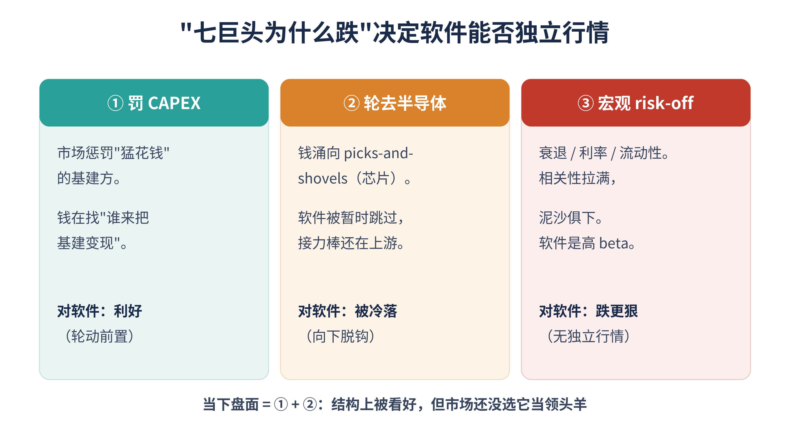
图 10 “七巨头为什么跌”决定软件能否走出独立行情
第一种，跌是因为市场惩罚 CAPEX——这对软件层是相对利好，因为钱在离开“猛花钱”的基建方，去找谁来变现。第二种，跌是因为钱轮动去了半导体——软件只是被暂时跳过，接力棒还停在上游一站。第三种，跌是因为宏观 risk-off——相关性拉满、泥沙俱下，软件作为高 beta 跌得比指数更狠。
当下盘面是第一种叠加第二种：市场一边罚基建、一边把钱塞进半导体。对软件是混合信号——结构上被看好（罚基建=轮动前置），但市场还没选它当下一个领头羊。
6.3 同主题篮子的相关性
还有一层逃不掉：纯 AI 软件股和七巨头是装在同一个主题篮子里的——同样的 ETF、同样的对冲基金 pod、同样的“AI software”筛选器。篮子被卖，它们一起被卖，那套 ROI 框架在急跌阶段是暂时失效的。
6.4 历史类比
2000–2002 和 2022–2023 都说明同一件事：优质软件的独立行情都不是跟大盘下跌同时发生，而是滞后的、分阶段的。优质会脱钩向上，但通常要等到宏观/利率的压制抬升，或领头羊衰竭之后才发生。
Part 7 实时数据验证（2026 年 6 月）
以下数据用来把前面的逻辑落到当下的真实盘面。具体出处见文末“来源”。
7.1 盘面：历史性背离与估值
软件与半导体的强弱，拉出了有记录以来最大的背离。
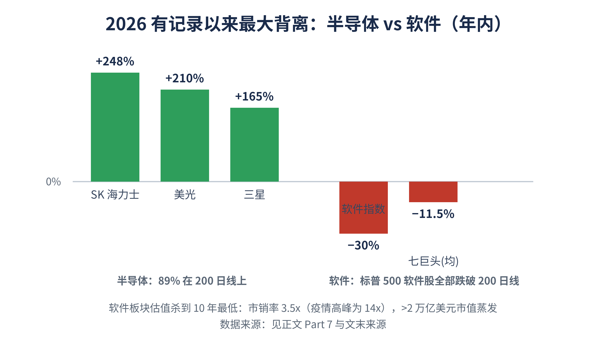
图 9 2026 年内：半导体大涨 vs 软件大跌的历史性背离
| 指标 | 数值（2026 年内） | 含义 |
| 七巨头 | 平均跌约 11.5%，跑输纳指 | “血包”，CAPEX 拖累 FCF |
| 2026 资本开支 | 五大厂约 7500 亿美元，同比 +67% | 微软 FCF 多年来首次走平 |
| 半导体/存储 | SK 海力士 +248%、美光 +210%、三星 +165% | HBM 超级周期、涨价、缺货 |
| 软件 vs 半导体 | 软件全部跌破 200 日线；半导体 89% 在线上 | 有记录以来最大背离 |
| 软件估值 | 市销率 3.5x（疫情高峰 14x） | 10 年最低，>2 万亿市值蒸发 |
7.2 幸存者的基本面在变强
最关键、最反直觉的一点：好公司的基本面在变强，股价却在跌——价格和基本面向下脱钩，正是“幸存者被无差别抛售”的画面。
| 公司 | 最新季度增长 | AI / 用量看点 |
| ServiceNow | 营收 +22%，全年指引上调到 157 亿 | AI 收入目标 10 亿→15 亿；新签 50% 已非按席位；但毛利故事“更复杂”，已开打定价战 |
| Salesforce | Agentforce ARR 突破 10 亿 | 三位数增长，按 agent 推进 |
| Palantir | 营收 +85%，美国商业 +133% | 全年指引上调至约 76.5 亿（+71%） |
| Snowflake | 产品收入 +34% | RPO +38% 快于收入，预示加速 |
7.3 token 经济学的真实数据：打了“便宜=毛利”的脸（短期）
Part 3 的“token 越便宜毛利越高”，长期方向对，但 2026 的现实数据短期是反过来的，必须把这个修正吃进去：
token 单价一年跌了约 75%（约 10 美元→2.5 美元/百万 token），中位降速约每年 50 倍。
但企业 AI 账单同期涨了 320%——因为 agentic 工作流把用量打爆了（Jevons 效应的极端版），推理成本现在占企业 AI 预算的 85%。
后果直接打在毛利上：有公司没设上限，一个月烧掉 5 亿美元；微软因成本砍掉大部分 Claude Code 许可；ServiceNow“把 AI 做成免费、定价战开打”。
换句话说：“省下的 token 不用让给客户”这个前提，在 2026 还没成立。你的逻辑要兑现，得等“token 通缩的速度 >> 用量膨胀的速度”，并且幸存者的锁定强到能顶住定价战——现在两个条件都还没到。
7.4 ROI 反思的数据：分拣机确实在转
MIT NANDA 研究：95% 的 GenAI 试点没有可衡量的财务回报；S&P Global：42% 的公司放弃了多数 AI 项目；IBM：仅 25% 达到预期 ROI。
74% 上线过客服 AI agent 的公司，回滚了至少一部分。
但整体 AI 支出仍在上升（Gartner 估 2026 年全球约 2.59 万亿美元）——砍掉没价值的试点，同时在能衡量回报的地方继续投。这正是分拣机在转的样子。
7.5 宏观背景：最需要的顺风，现在是逆风
美联储 6 月按兵不动在 3.50%–3.75%，抹掉了 2026 的降息、推迟到 2027–28。
油价 4 月一度飙到 113 美元，核心 PCE 从 3.0% 升到 3.3%；BofA 甚至预测年内加息三次。
含义：长久期软件最需要的那个估值顺风（催化剂④）现在缺席，且方向相反。
Part 8 综合判断：非对称机会成立吗
8.1 催化剂打分卡：3 个里只到位约 1 个
把第 4 部分的脱钩催化剂，对着实时数据验一遍：
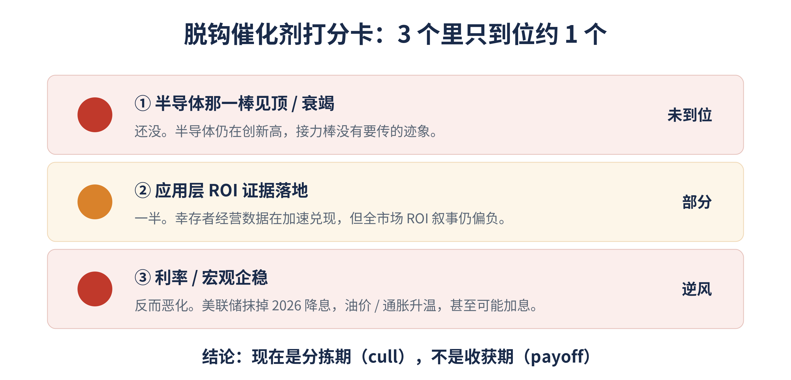
图 11 脱钩催化剂打分卡：3 个里只到位约 1 个，现在是分拣期
| 脱钩条件 | 状态 | 说明 |
| ① 半导体那一棒见顶/衰竭 | 未到位 | 半导体仍创新高，接力棒没有要传的迹象 |
| ② 应用层 ROI 证据落地 | 部分 | 幸存者经营数据在加速，但全市场 ROI 叙事仍偏负 |
| ③ 利率/宏观企稳 | 逆风 | 抹掉 2026 降息，油价/通胀升温，甚至可能加息 |
三个里只到位约一个，而且是最软的那个。这就是为什么背离能拉到历史极值——市场没有理由现在就从能涨的票（+200%）换到破掉的票。
8.2 两层结论
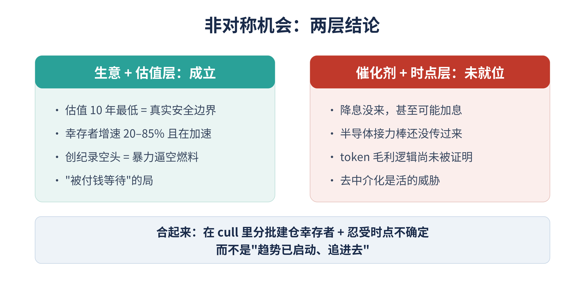
图 12 非对称机会的两层结论：生意/估值层成立，催化剂/时点层未就位
生意 + 估值层：成立。10 年最低估值=真实的安全边界（很多坏消息已 price in）；幸存者增速 20–85% 且在加速；创纪录的空头仓位=随时可能暴力逼空。这是“被付钱等待”的局——你说的“安全边界下的高赔率”，在精选的幸存者身上逻辑是通的。
催化剂 + 时点层：未就位。让股价真正重估的两个开关——降息、半导体接力棒传过来——现在都没打开，而利率这个开关短期还在往反方向走。所以 2026 下半年更可能是继续分拣 + 死钱/暴力逼空交替，而不是干净的主升浪起点。
合起来：这是“在分拣期里分批建仓幸存者、并准备好忍受时点不确定”的非对称，而不是“趋势已启动、追进去”的非对称。
8.3 证伪信号（要持续盯的反向指标）
token 的账单端：看幸存者的毛利率拐点。若 agentic 用量继续把 COGS 顶上去、定价战继续打，“毛利扩张”就迟迟不来——ServiceNow 的毛利是那只金丝雀。
去中介化：“ChatGPT 直接挑战软件定价权”“AI agent 抹掉 2 万亿 SaaS 价值”已是市场叙事。模型厂商前向一体化，是这套多头逻辑最硬的对手。
宏观：只要油价/通胀不退、美联储不松，软件的估值天花板就压着。这一个变量，可能比所有个股基本面加起来还重要。
8.4 免责声明
以上为基于公开数据的分析框架，不构成投资建议；本文作者不是投资顾问。具体标的、仓位与择时，请结合个人风险承受能力，或咨询持牌专业顾问。
来源
以下为正文引用的关键数据出处（检索于 2026 年 6 月）：
七巨头 2026 回撤与原因 — Money.com / FinancialContent / CNBC
Hyperscaler 2026 CAPEX 约 7000–7500 亿美元 — Yahoo Finance / Motley Fool / CreditSights
存储/HBM 超级周期（SK 海力士、美光、三星涨幅）— Yahoo Finance
软件 vs 半导体历史性背离、200 日线 — Tickeron / IndexBox / StockCharts
软件估值 10 年最低、市销率 3.5x、>2 万亿市值蒸发 — Motley Fool / CNBC / Morningstar
ServiceNow Q1 2026、按用量转型、毛利复杂性 — SaaSrise / SEC 8-K / Medium
Salesforce Agentforce ARR、Palantir 与 Snowflake Q1 2026 — Yahoo Finance / SEC 8-K
企业 AI ROI 反思（MIT NANDA 95%、S&P 42%、IBM 25%）— Axios / theaiconsultingnetwork
token 降价约 75% 但账单升 320%、推理占预算 85% — Epoch AI / Oplexa / Startups.com
美联储 6 月按兵不动、降息推迟、油价与通胀 — CNBC / Morningstar / StoneX